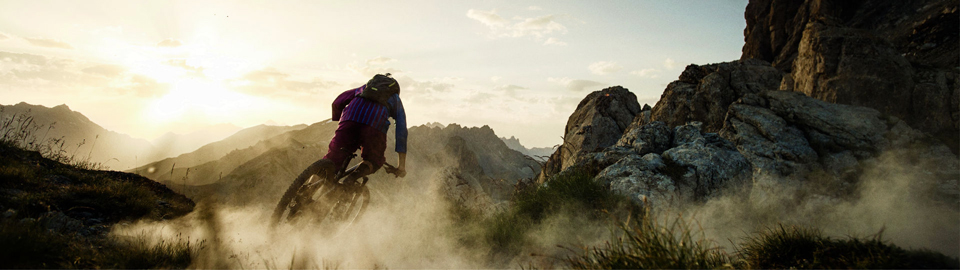
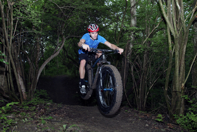
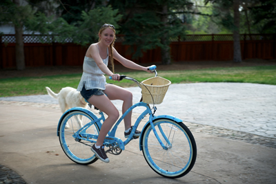
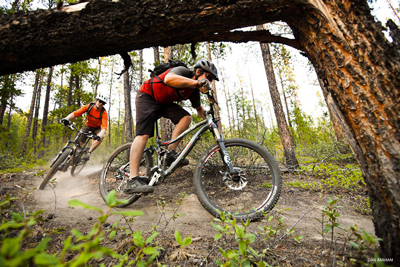

Shepherd Bike Shop
Welcome
Welcome to the Shepherd. We love all sorts of bikes and want to share our collection of bikes, parts, clothing and accessories in one easy location. Take a look around and let us know if there is something you can't seem to find. Our staff is knowledgeable and we are all Shimano bike fitting certified.
Fat Bikes
Fat bikes have really kicked off in the last 3 years and I am sure by now you have seen one of these beast rolling down a winter trail. But what is a fat bike? Well a fat bike is a bicycle with over-sized tires, typically 3.7" or larger that are designed for riding on soft unstable terrain such as snow and sand. These bikes are built around frames with large forks and stays to accommodate the wide rims required to fit these tires. At Shepherd bikes you will find a comprehensive selection of fat bikes and if you’re into back country touring then check out the Norco Bigfoot. Check out our Bigfoot bikes by clicking here!
Townie
In the past year we have been inundated with request for townie bikes. These cool retro bikes have been a hit with our customers and you can customize the look of your bike to suit your personality. The revolution started here with the Electra’s Townie which it’s patented Flat Foot Technology. For most folks looking for a bike to get around town it was love at first sight. That love has made the Townie the best-selling bike in the store.
With the Townie bike you’re in for a different riding experience. With an upright seating position that lets you see the world better and plant your feet flat on the ground whenever you want, it sets a new standard in comfort and control. We know it can be hard choosing the right bike that’s why we recommend for you to come in and get a free fitting. We encourage you to take out a bike and ride it. Only then will you know if the bike is right for you. Click here for more details about our Townie Bikes!
Mountain Bikes
Mountain bikes make up 90% of all bikes sold in Canada from your Canadian Tire CCM at under $200 dollars to the M55 designed with Formula One technology at a price tag of $35,000 US there is room for something with in your budget. No matter your skill level from a novice rider to the rider who charges charge fearlessly down the mountain or maybe you like to spend hours in the saddle setting your mind free. Better not leave out those who endeavor to win on the racecourse. At Shepherd bikes we have tried to match our mountain bikes to three levels of rider beginner intermediate to advanced in different forms of riding. For the first time rider we have a few options but we have chosen the Rockhopper and we are so confident in the bike that we bought this bike exclusively for our rental bikes. Click here to learn More about the Rockhopper.